A tutorial guide of the EOLDAS prototype software¶
Purpose¶
This document provides a guide to concepts of Data Assimilation (DA) and the use of the EOLDAS prototype software.
EOLDAS is written in Python and provides an easy way to implement and test out advanced DA concepts. It should be portable to most computer systems with a sane Python installation and a FORTRAN compiler.
The primary purpose of the EOLDAS software is to allow the optimal estimation of (mainly land surface, mainly vegetation) state variables (e.g. quantifying how much vegetation there is at a particular time and place) from remote radiometric (Earth Observation) data.
A secondary task, that will be further explored in a follow on project and within NCEO is to allow us to use Earth Observation data to test and constrain physical models of how we think our environment ‘works’, encoded as what me can call ‘process models’.
This is not an easy task, as there is generally not enough ‘information’ in our observations alone to enable a ‘good estimate’ of vegetation quantities from space-based observations. In any case, whatever approach we take, we want to be able to have an idea of how ‘good’ our estimate is.
We find that Data Assimilation, an optimal estimation framework allows us to apply multiple constraints in a consistent manner to achieve our aim.
Introduction to the problem we are trying to solve with an EOLDAS¶
In recent years, monitoring of the Land surface has received great attention. Accurate estimates of the state of the vegetation, snow cover or disturbance are required by scientists and decision-makers in fields as diverse as environmental science, disaster monitoring or food security. Earth Observation (EO) data, being (mostly) radiometric measurements from instruments on satellite platforms, have great potential to to contribute to such monitoring. Further, we have historical archives of EO data over several decades that allow us to start to build a picture of how physical properties on the Earth surface have been changing. We can then use these data for instance to test the accuracy and robustness of ‘models’ that are implementations of our current understanding of how people and the Earth System interact. We can then contribute to improving these modelsand improving our understanding.
The main advantage that EO has is that it is ia consistent source of information (provided instrument calibration is understood and monitored) and can often provide global coverage. In a sense, it is ‘objective’ (within the limits of the orbital and physical measurement constraints imposed on it), and it is also (certainly for the user at leasti, and also arguably because of the coverage it provides) generally quite a cheap source of information. Probably one of the most common use of land surface EO data that the general public come into contact with is that available through sources such as Google Earth. Such data provide ‘visual’ information to the user, and with a little ‘photo interpretation’, many properties of the land surafce can be inferred.
The problem we have here though is to ‘automatically’ provide reliable and constent information from such data for global coverage: we want to quantify the properties of the land surface, not just to describe it. The EO data that we have access to do not directly provide the information we want. If we want to improve models of e.g. how vegetation interacts with climate, we need to connect the radiometric information to what we can call model ‘state variables’: things that the models have a representation of, such as the amount of leaf area per unit land area. This implies some sort of inference.
Traditionally in land surface EO and many other areas, we have taken the apporoach of trying to estimate these state variables directly from the observations, and to provide ‘products’, such as those developed and distributed by national Space Agencies and other organisations to users. This is a laudable and valid aim and has been practically achievable since the start of this millenium. It has allowed ‘end users’ access to vast amount of information that have made significant contributions to monitoring and understanding how the Earth System ‘works’ and what the impacts of people and climate (as major influencing factors) have been.
These products have, in the main, been developed to provide consistent datasets from a single source of information. So, for example, a global leaf area index (LAI, the amount of one sided leaf area per unit ground area) dataset is generated by NASA from the MODIS intrument and others from projects such as Geoland2 from the EU. There are many practical reasons for developing such products using data from individual satellite sensors, but each product has its own set of issues which the developers try to quantify and encapsulate in quality assurace (QA) information. This is generally available for each spatial and temporal sample in the dataset, but at the moment, it is more difficult to know what the uncertainty of any particular observation might be. There has been much work on ‘validating’ and (inter-)comparing these products to try to gauge how well they agree, but it it problematic to combine them without loss of information.
Further, and potentially significant for many end users who really just want to know the LAI over some area and time (and how good that estimate is), each product is generated using different assumptions about the surface they suppose to measure. If these data are to be ingested into other models that have an LAI state, close inspection of the models used to generate the EO datasets and those in the process models will often reveal a mis-match in the assumtpions made (e.g. concerning the spatial distribution of vegetation elements: whether and how ther are clumped or not). Additionally, quantifying uncertainties in the data is far from trivial as it involves considering the impact of the whole collection of information used: the measurements, the models used for inference etc.
This leads us on to a Bayesian idea of the ‘data’ (information) we are trying to produce. In essence, we cannot provide a ‘truth’, but rather an estimate of the likely statistical distribution of the information we infer. Within such an approach, we can combine information using Bayes rule. This allow us to (potentially) explicitly consider and combine the various sources of uncertainty in our mapping from EO data to information. This can include information beyond that in the EO data themselves.
It is now established that an optimal blending of these different sources of information leads to the best possible estimate of the state of the land surface. This estimate needs to be qualified, and provide information on how uncertain it is, or how different parts of the system co-vary.
Data assimilation (DA) techniques allow the combination of different sources of information, weighted by their individual uncertainty, to provide an estimate of the state of the land surface that is conditional on all the information that is combined. The EOLDAS project aims to demonstrate DA techniques with satellite data by developing a software tool that allows the exploration of DA techniques. This requires the usage of complex physical models that explain how the scene of interest is translated into the actual radiometric measurements, as well as ancillary information of how some parameters may vary, either through mechanistic models (for example, dynamic vegetation models that explain the development of vegetation using simple rules based on typically meteorological inputs), statistical models (for example, historical estimates of leaf area index from field measurements) or simple constraints of the evolution of these parameters (for example, by forcing the evolution of leaf area index to be smooth and continuous).
Capabilities and Limitations of the current EOLDAS¶
The EOLDAS software allows for various forms of EO and other data to be combined to provide an optimal estimate of state variables. It requires that the uncertainties of the input data are quantified. At present, this is limited to an assumption that Gaussian statistics can be used to describe the uncertainty, i.e. input data are represented by their mean value and standard deviation (or more fully a covariance matrix, although some of the input data formats currently accepted only consider standard deviation). This can cause problems for highly non-linear systems, especially if the uncertainties are large, so this can be partially overcome by transforming the representation of the state variable. Arbirtary transformations are allowed, but a typical one would be to work with a state variable that is an exponential transformation of the desired state variable.
The DA system requires a model to map from EO data (radiance or reflectance data) to the state variables of interest (e.g. LAI). We will call such models ‘Observation Operators’ as they map state to observations. A few example Observation Operators are available in this release of EOLDAS, including the semi-discrete radiative transfer model of Gobron et al. 1997, for which an adjoint has been develoepd here to allow more rapid state estimation. In addition, the linear Kernel models used in the MODIS BRDF/Albedo product are included and an interface to the 6S atmospheric model is provided. The EO data that can be used is then essentially limited to observations in the optical domain (~450-2500 nm), if these operators are used.
No ‘biophysical’ process models are included in this release, only a form of regularisation model.
Initial exploration¶
Exploring a univariate timeseries¶
EO data timeseries allow for the monitoring of the land surfaces. The data gathered by space-borne sensors can be related to a number of parameters of interest, such as “vegetation greenness”, fraction of absorbed photosynthetically active radiation absorbed by a canopy, etc. Monitoring how a location on the Earth’s surface changes with respect to time is thus an important task of remote sensing. Analysing these data is fraught with difficulties: as any other measurement technique, data have uncertainties. Cloud cover or the choice of orbit can result in data only being available for a few dates. The role of data assimilation (DA) is to use these measurements, together with any other ancillary information that may be available on the state of the land surface, to infer its true state. This inference exercise should provide us with an idea of how much should we trust our estimate. This document presents examples of DA techniques, using the EOLDAS prototype software as a demonstration.
For the first example, we’ll consider a time series of the normalised difference vegetation index (NDVI) over an agricultural area in southern Spain. NDVI has been correlated with vegetation development: the index is low when the scene is composed mostly of bare soil and rises as the crop develops. The VI drops again as the crop senesces and is eventually harvested. It is interesting to us as an univariate time series with quite a clear shape. We can see four years of data, with a fallow/vegetative period cadence. We note, however, that the series is noisy, with abrupt changes and spikes showing up. This variability arises from a number of sources: instrument noise, different geometry acquisitions, shortcomings of the atmospheric correction, or fast changes in the soil brightness due to rain. Most of these factors are of little interest for the study of the vegetation, so they are usually considered “noise”, and a number of techniques are employed to remove this signal from the clean data.
The most common practice in processing such data prior to attempting an interpretation is to apply some sort of low pass filter to the time series. The reason this is appropriate is that we have an expectation that the progression of a quantification of the vegetation should (in the absence of episodic events such as harvesting or fire) should be smooth, though we might not know a priori how smooth we expect it to be. In other words, there is an expectation that high frequency variability (the spiky nature of the time series) does not happen in vegetation. A low pass filter will remove the high frequency variability, leaving the smooth underlying time series. Recently, the Savitzky-Golay filter has been widely employed to smoooth timeseries of vegetation indices. The figure shows an example of the original and filtered versions of the output.
[source code, hires.png, pdf]
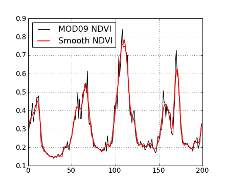{kind=link}
Note that the filtering relies on specifying its characteristics: what constitutes high frequency noise and how much does it need to be dampened by? The problem may be that we smooth too much or too little. The choice of parameters, in the absence of knowledge of the rate of change of things in the land surface is therefore problematic.
However, there are a number of issues to consider departures from simple smoothing of vegetation index data, although we will return to the concept of expectation of smoothness below:
- Vegetation indices are quite limited in their information content.
- Some of the non-smooth variation artefacts (such as acquisition geometry) can be explained by using suitable models. They are not noise, but useful signal.
- A single univariate datum only gives a limited insight into the state of the land surface. Physical-based models can be used to tease out the contributions of different processes within the scene.
- Thermal noise in the signal is usually well-characterised, and this knowledge has not yet been used.
- Different processes that affect the signal of interest evolve at different rates, so different filtering mechanisms could compete. This is even more pronounced when using vegetation indices, where all the information is projected into a single scalar magnitude.
- Without an understanding of the underlying signal, it is quite arbitrary to define appropriate filter characteristics for it.
These are just a few of the reasons why we may want to move away from simple filtering of vegetation indices for understanding the land surface, although VIs provide a powerful insight into (spatial and temporal) patterns of vegetation activity. We will introduce concepts of data assimilation and apply them to the problem of retrieving land surface parameters from optical sensors. For starters, we will still use a univariate time series, but will add increasing complexity to deal with different wavebands, the effect of the atmosphere and how we inject physical knowledge to the whole process.
Filtering and optimisation¶
We have seen that filtering a time series produces results that are ‘easier’ to interpret by reducing noise contributions to the signal. Additional insight is gained by noting that the desirable goal of removing high frequency components in the signal can be seen as equivalent of ensuring the signal is constrained to have relatively small changes between consecutive time steps. This is equivalent to saying that the best reconstruction of the original signal is the one where the timeseries’ first (or higher order) derivatives are small. They are small, but not zero, as zero would imply a constant valued signal.
Relating this to ideas in (biogeochemical) process models, having ‘minimal first order derivatives’ is equivalent to a zero-order process model (i.e. the expectation is that the state tomorrow is the same as today, with some degree of uncertainty on that). Similarly, a first order process model (an expectation of constant rate of change) is the same as minimising second order derivatives.
If then we had an estimate of the signal’s noise level, we could phrase the smoothing problem as a trade-off between “signal fidelity” and “expectation of smoothness”. Graphically, the reconstructed signal would be the one that, while still staying within the errorbars of the measurements, gives the most smooth trajectory. Clearly, the observation and smoothness terms would need to be balanced properly. Further, we need to fit in uncertainty in the observations and in our prior smoothness expectation into the problem formulation.
A first approach would assume that
each individual measurement in contaminated by independent Gaussian noise with
a variance 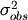. Stacking the uncertainties into a
covariance
matrix  , we can write the contribution of the observation
mismatch
to our problem as 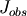:
, we can write the contribution of the observation
mismatch
to our problem as 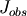:
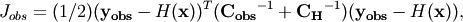
where 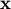 is our estimate of the true value of the state (i.e. what we would like to estimate)
and 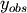 is an observation. The operator  maps from the space of to the space of . In the general case, 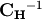 is the uncertainty in the result of the operator .
We will ignore in the discussion below, as the current implementation of EOLDAS
considers only 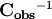, although it can be easily re-introduced into the expressions.
maps from the space of to the space of . In the general case, 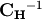 is the uncertainty in the result of the operator .
We will ignore in the discussion below, as the current implementation of EOLDAS
considers only 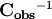, although it can be easily re-introduced into the expressions.
This is a very general expression, and we will see that it is this core equation that is at the heart of the DA system in EOLDAS.
In this particular case, the observation we are concerned with is our e.g. time series VI signal, so
is a vector with elements equal to a stack of the VI data. We have already stated that is the
uncertainty associated with this observation.
Since our state vector (i.e. what we want to estimate) is in the same space as the observations we can use
an Identity operator for , i.e. 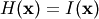.
Another way of expressing this is to suggest that is a prior estimate of the state variables
that we wish to estimate, so we can call this a Prior Operator:
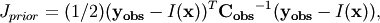
We wish to find the values of that give the minimum of , but the constraint with the identity operator is insufficient as the optimisation will result in the estimated state being the same as the input signal.
To express the condition of smoothness, we can encode that, for example, the signal change between consecutive time steps can be also be expressed through a Gaussian distribution with variance 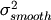. The difference between time steps can be calculated by introducing a first order differential operator matrix 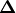 with the following form:
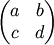
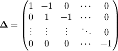
Stacking again the variances into a a covariance matrix, we can now define 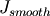 as
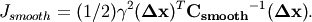
Here,  is a term controlling the degree of smoothness: the higher it is
the smoother the result will be. Since we can consider a constraint with a first order differential model
as a zero-order process model (i.e. tomorrow is the same as today), we can phrase the
inverse of 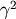 as the (squared) expectation of that process model: the expectation that,
on average over the whole dataset, tomorrow will be the same as today. It is interesting
to note that a zeroth order process model (a constraint of first order derivatives)
provides a linear interpolation between sample points.
is a term controlling the degree of smoothness: the higher it is
the smoother the result will be. Since we can consider a constraint with a first order differential model
as a zero-order process model (i.e. tomorrow is the same as today), we can phrase the
inverse of 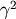 as the (squared) expectation of that process model: the expectation that,
on average over the whole dataset, tomorrow will be the same as today. It is interesting
to note that a zeroth order process model (a constraint of first order derivatives)
provides a linear interpolation between sample points.
Note that since we can sometimes assume 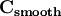 to be diagonal, this particular functional can be written as
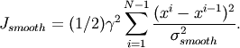
In other words, if the evolution of the signal is smooth (i.e., little change between timesteps, relative to 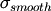), then will be small. On the contrary, large and frequent changes between timesteps (again relative to ) will result in a large contribution to .
Note also that we can replace the differential operators above by arbitrary orders of differential operators. A second order constraint replaces in the above by 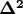, for example and has the attraction of smoothly interpolating between sample points, rather than the piecewise linear result one gets from a first order derivative constraint.
We can extend the idea of smoothness expectation to other expectations that we might have about the signal prior to the data being available. These expectations will include signal bounds, smoothness over other different time scales, and perhaps an expectation of what the trajectory of the signal is, either from historical data or from the predictions of an ecosystem model. states that we want a fit to the “model” predictions (in our example, the “model” basically states that the state does not change between timesteps), but we are quite happy to depart from this assumption if that provides a tighter fit to the observations. When we introduce , we introduce the concept that our expectation or state vector model has an error, and tightly fitting to it is thus undesirable.
So we have seen that we want to find an optimum in terms of and
. We define a function,  , the cost function, as the
sum of both terms:
, the cost function, as the
sum of both terms:
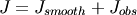
The minimum of will fit both the observations and our prior
expectation
of the model state. If we ignore , we simply have a typical least
squares problem, which may be indeterminate if the information content of the
observations is not enough to constrain a unique solution (which is generally the case).
The extra constraint of can be seen as a factor that ‘simplifies’ the problem, reducing the solution space, and making it ‘easier’ to solve. We can call this approach ‘regularisation’ as it helps to make the problem ‘more regular’ and tractable.
There is an obvious balance between our expectation of the signal () and our fidelity to the observations (), but we should not generally over-concerned with that: we do not want to over-fit the observations in any case because we understand them to have (random) error associated with them. The optimal solution will be dependent on the balance between 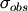 and . While the former may be available from apparatus calibration or ancillary measurements, the latter tends to be unknown or difficult to elucidate. We shall see what ways we have of identifying this parameter later on.
The problems the EOLDAS can solve¶
The EOLDAS prototype solves problems similar to the one expressed above. In
general,
these are termed 4DVAR problems with a weak constraint. Additionally, it is also
possible to solve 4DVAR problems with strong constraint (this basically means
that
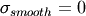, i.e., we trust that the solution lies fully in the
space of our expectatons. We also note that we can add more terms to
to encode extra information about it. This is the core idea in a variational DA system:
we can add constraints to the solution to express what we ‘know’ that might
influence our estimate, provided we know something of the uncertainty.
So for example, we can encode that the solution should fit the observations, be smooth and follow a trend not too dissimilar to that given by a historical expectation. The problem is then posed as
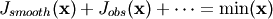
This type of problems require the use of optimisation techniques, which can be computationally very expensive. To some degree, the use of the derivatives of the cost functionals alleviates this cost, so in the next sections, it will be assumed that the derivative of the function to minimise is known, either because it has been calculated explicitly or because a numerical approximation can be estimated.
Mathematically, the minumimum of occurs when its derivative is zero.
Since generally has multiple elements (it is a vector) we desire
the partial derivatives of with respect to to be zero.